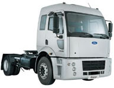
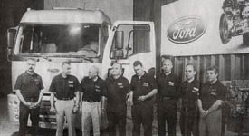
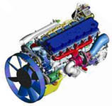
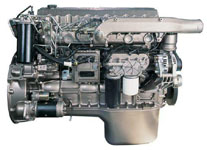

|
Ford
Otosan, Türk otomotiv sanayiinde bir ilki gerçekleþtirdi.
Düne kadar yabancý ortaklarýn lisansýyla üretimin yapýldýðý
Türk otomotiv sanayiinde, Ford Otosan ilk kez lisansý ve mülkiyet
haklarý yüzde 100 kendisine ait bir kamyon ve dizel motor
üretti. Tamamen Türk mühendisleri tarafýndan 50 milyon dolarlýk
yatýrýmla geliþtirilen yeni Ford Cargo kamyon ve dizel motor
Ecotorq eylül ayýnda Türkiye'de satýþa sunulacak.
Kamyonun
kabin tasarýmýnda Ýtalyan Ghia Design Studio (Ghia S.p.A.),
motor projesinde ise Robert Bosch ve Avusturya'lý AVL firmasý
ile ortak olarak çalýþýldý. Turin þehrinde bulunan Ghia S.p.A.,
Ford Motor Company'nin bir yan kuruluþudur. Projede 128 teknik
eleman, 10 stil tasarýmcý, 35 ressam, 15 model yapýcýsý çalýþmýþtýr.
Türk
otomotiv sanayiinde yeni bir sayfa açan, kamyon ve motorun
bütün lisans ile mülkiyet haklarýna sahip olan Ford Otosan,
üretim için lisans ücreti ödemediði gibi, bu motorun yurtdýþýnda
baþka firmalar tarafýndan üretilebilmesi için lisans verebilecek.
Ford Otosan, Ford Cargo kamyondan önce de, Avrupa'da yýlýn
'van'ý seçilen Transit Connect'i ortaðý Ford ile birlikte
geliþtirmiþti. Ancak, Transit Connect'in mülkiyet ve lisans
haklarý hem Koç Grubu'na hem de Ford Motor'a ait bulunuyor.
Bu nedenle yeni Ford Cargo ve dizel motor Ecotorq, Türk otomotiv
sanayiinde bir ilk olma özelliðini taþýyor.
Geçen
yýl Avrupa'da 19 fabrika arasýnda Gölcük fabrikasý ile birlikte
'En iyi Ford fabrikasý' seçilen Eskiþehir'deki Ford Otosan
Ýnönü Fabrikasý'nda üretilen yeni Ford Cargo ve dizel motorun
tanýtýmýnda konuþan Ford Otosan Genel Müdürü Turgay Durak,
yýlýn ticari aracý seçilen Transit Connect'ten sonra Yeni
Cargo ile Ford Otosan'ýn Ford Avrupa'nýn ticari araç merkezi
olma yolunda emin adýmlarla ilerlediðini söyledi. Durak, Avrupa
Birliði güvenlik ve emisyon normlarýna uygun olarak üretilecek
Yeni Ford Cargo'nun sahip olduðu teknoloji ile geleneksel
ihracat pazarlarý için bir fýrsat olacaðýný da ifade etti.
Durak, "Ürün geliþtirme konusunda yeni bir baþarý ortaya
koyuyoruz; yeni Cargo ile Türkiye'de pazar liderliðimizi koruyup
yurtdýþýnda ise Avrupa'ya direkt ürün ihracatý, bölgemizde
bulunan ülkelere lisans satýp orada üretim yapýlmasýný saðlamak
istiyoruz. Geleneksel ihraç pazarlarýmýz Kuzey Afrika, Ortadoðu
ve Orta Asya ülkeleri. Bu bölgelerde yeni kamyonumuzun CKD
veya lisansla üretimi gerçekleþebilir. Ayný zamanda Ford Brezilya,
Ford ABD ve Ýngiltere'de Hendy Lennex'de dizel motorumuzun
üretimi için fizibilite çalýþmalarý yapýlýyor" dedi.
Ford
Otosan Genel Müdürü Turgay Durak, Ýnönü fabrikasýnýn bu yeni
projeleri üretime almasýyla birlikte Türkiye'nin Ford Avrupa'nýn
ticari araç üretim merkezi olmaya doðru ilerlediðini söyledi.
Ford Otosan Genel Müdür Yardýmcýsý Ufuk Güçlü de, yeni Cargo
ve Ecotorq motorlar geliþtirilirken 128 kiþilik ekibin dünyada
kullanýlan tüm bilgi teknolojilerinden faydalanarak son derece
modern ürünler ortaya koyduðunu söyledi. Güçlü, "Biz bu kamyona
Ýnönü'de doðan Avrupalý adýný koyduk. Doðru bir isim koyduðumuz
zaman zaten gösterecek. Biz bunda iddialýyýz." dedi.
Projenin
baþlangýcýnda bitiþ süresinin 3 yýl olarak hesaplandýðýný
ancak 5.5 yýl sürdüðünü belirten Durak, bunun nedeni olarak
yaþanan ekonomik kriz ve Transit Connect projesini gösterdi.
Ancak Transit Connect projesinin, yeni Ford Cargo projesi
için öðretici olduðunu açýklayan Durak, "Transit Connect
projesinde edindiðimiz deneyimden kamyon projesinde de yararlandýk.
Bu maliyetlerimizi de düþüren bir unsur oldu" dedi.
Geçen
yýlý en fazla satan marka olarak tamamlandýklarýný hatýrlatan
Durak, bu yýlýn 5 ayýnda da birinciliklerini koruduklarýný
söyledi. 5 ayda yüzde 14.5'lik pazar payýna ulaþtýklarýný
belirten Durak, 2003 sonunda 46 bin adeti iç pazar 80 bin
adet ihracat olmak üzere 126 bin araç satýþý gerçekleþtirmeyi
hedeflediklerini ifade etti.
Yeni
Cargo, yarýsý Avrupa'da olmak üzere birçok testten geçti;
Bu testlerin bir kýsmý halen devam ediyor. Ancak, araçlarý
hem rakip firmalarýn hem de müþterilerin görmemesi için Ford
Otosan Genel Md. Yard. Nigel Sharp'ýn bir fikri uygulandý:
Araçlar askeri araç rengine boyanýp Ford logolarý olmaksýzýn
5 ay boyunca kimseye fark edilmeden Türkiye yollarýnda dolaþtý.
Irak savaþý nedeniyle insanlar yollarda zaten birçok askeri
araç gördüðü için yeni Cargo'yu fark etmedi.
Yeni
Cargo, bir yýl ekonomik kriz nedeniyle, bir yýl da Connect
projesinin öne geçmesiyle erteleme yaþadý. Ancak Ford Otosan
bu erteleme nedeniyle 14 milyon dolar yatýrým kârý elde etti.
Yeni CArgo ve Ecotorq motorun geliþtirilimesi sýrasýnda 12
bin eskiz çalýþýldý. 40 test aracý ile 3 milyon 100 bin km
yol testi yapýldý. Tasarým ve geliþtirme aþamasýnda 2,2 terrabyte
bilgisayar verisi oluþtu, bu da yaklaþýk 3 bin 142 adet CD
dolusu bilgi anlamýna geliyor.
Proje
baþ mühendisi Burak Gökçelik, projenin aþamalarýný þöyle
özetledi:
Yeni
Ford Cargo'nun 5.5 yýl süren serüveninde her aþamada müþteri
deðerlendirmelerini ön plana aldýk. Deneyimli kamyon kullanýcýlarý
ve büyük filo müþterileri ile birlikte çalýþtýk.
Bu
çerçevede 4 ay süreyle yürüttüðümüz pazar araþtýrmalarý
ve rakip araçlarýn incelenmesi neticesinde kamyon pazarýný
segmentlere ayýrdýk, her segmentin dizayn karakteristiklerini
ve burada yer alan rakip araçlarý belirledik. Bu ayýrýma
göre yeni aracýmýzý konumlamak istediðimiz segmenti belirleyerek,
buna uygun dizayn konseptleri oluþturduk. Bu konseptler
arasýndan bir dizayn temasý seçerek fizibilite çalýþmalarýna
baþladýk ve görsel onay için tam ölçekli bir kil model oluþturduk.
Tasarým sürecinin her aþamasýnda müþterilerimizin sesini
dinledik: Geliþtirdiðimiz ilk prototip aracýmýzý 1 hafta
süreli bir araþtýrmayla, yerli ve ithal rakiplerimizle mukayeseli
olarak müþterilerimizin beðenisine sunduk. Aldýðýmýz sonuç
bizi cesaretlendirdi: Görünüþ, iç ve dýþ aksam bakýmýnda
Yeni Ford Cargo sýnýfýný en iyisi olarak deðerlendirildi.
Þirketimiz yapýsýnda yer alan Türkiye'nin tek dizayn atelyesinde
2 yýl boyunca yoðun olarak çalýþtýk... Bu süreç içinde mükemmele
ulaþmak için; 12,000 eskiz, 34m2 yüzey,12 yarým model, 72
prototip gövde ve 128 hýzlý prototip detay parça üretildi,
8ton model kili kullanýldý.
Müþteri
araþtýrmalarýndan çýkan diðer bir ilgi çekici sonuç ise
belki de projenin en önemli ayaðýný oluþturdu. Motor ömrü...
Kamyon kullanýcýlarý 3-5 yýl sonra kamyonlarýný yenilemek
isteseler de bu çevirim ancak 10 yýlda bir olabiliyor. 10
yýlýn ise yaklaþýk 1,000,000 km yola denk geldiði belirlendi.
Böylece Ford Otosan, Yeni Ford Cargo'nun yapýsal dayanýklýk
hedefini 1.000.000 Km. olarak belirledi.
Bilgisayar
Destekli Mühendislik çalýþmalarý ile tamamen sýfýrdan üretilen
ilk Türk dizel motorun geliþtirilmesi için çekirdek bir
ekip kuruldu. Tamamen sanal ortamda yapýlan analizler neticesinde
çizilen parçalarýn fiziki testlerle doðrulanmasý gereði
nedeniyle yoðun bir test süreci baþladý...
Bilgisayar
destekli mühendislik çalýþmalarý ile tamamen sýfýrdan üretilen
ilk Türk dizel motoru, Türkiye yollarýnda 3.1 milyon kilometre
boyunca test edildi. Bu hesaba göre ilk etapta üretilen 40
kamyon dünyanýn etrafýný 78 kez dolaþmýþ oldu. 7 gün 24 saat
boyunca 3 vardiya olarak test edilen Ford Otosan test kamyonlarý
günde 1000 km. ortalama ile ayda 30 bin km'ye ulaþýyor. Kamyonun
seri üretimine baþlanacaðý döneme göre bu testlerin 3.5 milyon
km'ye, tüm testlerin toplamýnda ise 10.5 milyon km'ye ulaþmasý
planlanýyor. Bu testlerin sonucunda yeni Ford Cargo, 27 kez
Aya yolculuk yapmýþ olacak.
ÝTÜ,
Ford Otosan ve Ford'un Dunton'daki mekanik laboratuvarlarý
ve dinamometrelerde ve Ford-Belçika'da iki özel test parkuru
ile Türkiye'de seçilen yollarda testler yapýldý. Yeni Ford
Cargo, Avrupa ve ulusal tip onayý için gereken 41 adet homologasyon
testi de dahil olmak üzere 553 adet sistem ve aksam testine
ve 155 gün süren dayaným testine tabi tutuldu. Bu testlerin
dýþýnda 4 adet Yeni Ford Cargo, 3 ay süreyle Ford'un Lomel/Belçika'daki
özel parkurunda 10 yýllýk ömrüne eþdeðer þekilde test edildi.
Türkiye yollarýnýn karakteristiðini belirleyen Ford Otosan,
þimdiye kadar yapýlmamýþ bir çalýþma gerçekleþtirdi. Bir kamyonun
Türkiye'de karþýlaþtýðý tüm yol þartlarýný bir parkur üzerinde
simüle edildi.
Know-how
ve mühendislik haklarýnýn Ford Otosan'a ait olduðu Ecotorq
dizel motor, Avrupa'da geçerli olan Euro3 normlarýna uygun
olarak geliþtirildi. Motor 2007'de devreye girecek Euro4 normu
için de uyumlu olarak üretildi. Ancak, Türkiye'de henüz Avrupa
standartlarýna uygun motorin üretilmediði için, dizel motor
Türkiye yollarý için Euro1 normlarýna uygun hale dönüþtürüldü.
Avrupalý ve ABD'li rakiplerine göre sýnýfýnýn en sessiz motoru
olan (93.4 desibel) olan motor, yakýt tüketiminde de Türkiye
pazarýnda en düþük deðerlere sahip. 240 ve 300 beygir gücünde
iki motor seçeneði olan Ford Cargo' piyasaya 4 deðiþik dingil,
3 tip kabin ve 10 deðiþik dingil açýklýðýnda sunulacak.
|
|

|
|
Soldan
saða: Motor Test Teknisyeni Atilla Ural, Ürün Geliþtirme
Ekip Lideri Ömer Rüþtü Ergen, Ürün Geliþtirme Müdürü
Doðan Þan, Ürün Geliþtirme Ekip Lideri Cem Özen ve Ýnönü
Fabrikasý Ekip Lideri Melik Yaman görülmektedir.
Kaynak:
BÝZDEN HABERLER Dergisi, Eylül 2004, Sayý:318 bizdenhaberler@koc.com.tr
|
Ford
Otosan Ürün Geliþtirmeden sorumlu Genel Müdür Yardýmcýsý Ufuk
Güçlü, yeni Ford Cargo'nun Türkiye otomotiv sanayii için yeni
bir kilometre taþý olduðunu söyledi. Türk mühendislerinin,
tasarýmcýlarýnýn ve iþçilerinin geliþtirdiði ve ürettiði kamyonun,
Türkiye'nin sert yollarýna uygun Avrupalý bir kamyon olduðunu
belirterek, yeni Ford Cargo'yu "Ýnönü'de doðmuþ, sert Avrupalý"
olarak tanýmladý. Güçlü, þöyle devam etti: "Biz bir ekibiz.
Güçlü, bilgili hem de tecrübeli bir ekibiz. Bununla gurur
duyuyoruz. Ford Otosan'da bugüne kadar yaptýklarýmýzla ve
halen yapmakta olduklarýmýza bakýyor geçmiþte iyi þeyler yaptýðýmýza,
bugün çok iyi þeyler yapmakta olduðumuza inanýyor ve yarýn
daha iyisini yapacak yeni nesillerin yetiþmesine katkýda bulunmaktan
gurur duyuyoruz. Bizi rakiplerimizden ayýran en önemli farkýmýzýn
fedakar çalýþanlarýmýz olduðuna inanýyoruz."
Daha
fazla bilgi için:
- Yeni
Ford Cargo ile Ford Otosan artýk daha gururlu... 12 Haziran
2003
http://www.ford.com.tr/haberler/haber_goster.aspx?haber_id=128&cat=0
- ECOTORQ
, Türkiye'nin "sýfýrdan tasarlanmýþ" ilk motoru... 11 Haziran
2003
www.ford.com.tr/haberler/haber_goster.aspx?haber_id=127&cat=0
- www.memagazine.org/contents/...
> Going the Distance," Feature Article. Mechanical
Engineering Magazine, July 2005
- The
company gave the Cargo a new diesel engine that it developed
in-house and dubbed Ecotorq. According to the company,
the new engine not only meets the European Union's Euro-III
emissions standards but has been designed with the potential
to meet the more stringent Euro-IV standards yet to
take effect. It also designed the truck to run for 1.2
million kilometers on Turkish roads without developing
cracks in critical suspension, frame, or cab structures.
|